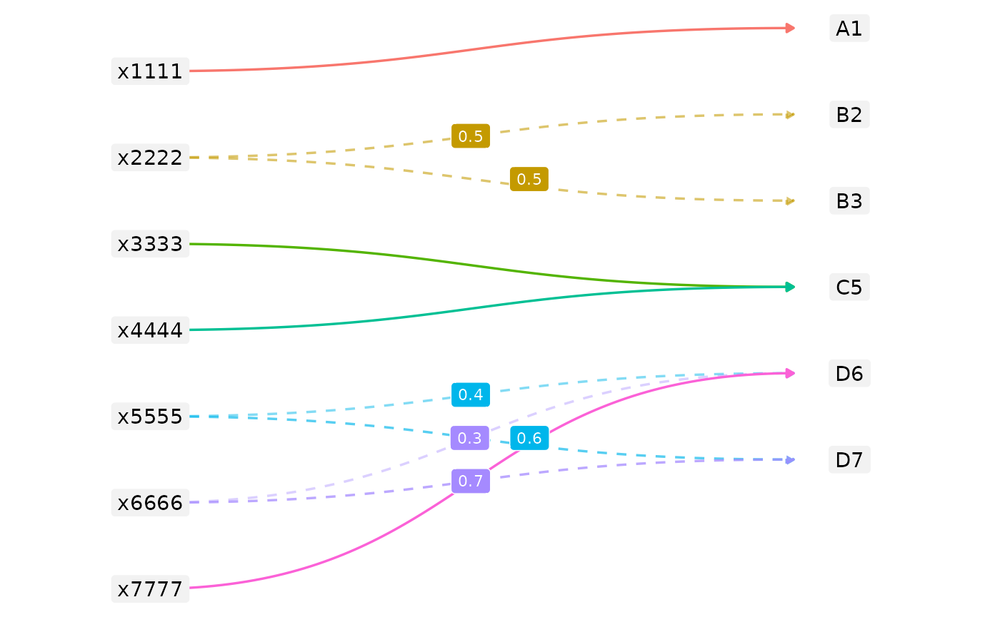
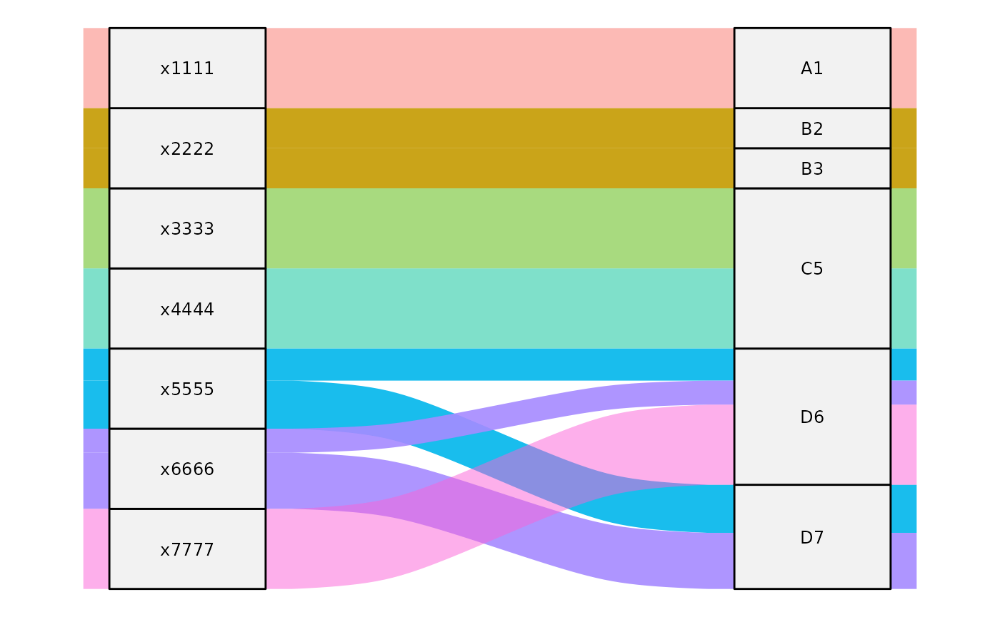

Once you have created and validated your xmap_tbl
objects, it’s time to actually harmonise dataset values. When
transforming a dataset from one classification to another, you have to
make sure that you have rules for how to handle every single category in
the source classification, and that missing values are handled
appropriately so you don’t create silent errors with data loss.
This vignette covers the conditions
apply_xmap(.data, .xmap) checks before transforming data,
how to check them cheaply with validate_apply_xmap() or
diagnose them in detail with diagnose_apply_xmap(), and
what happens if your crossmap doesn’t cover one or more of the source
keys in your data.
We use demo$simple_links, a small
xcode -> alphacode crossmap with a mix of unit and
fractional weights applied to simple_data as a
self-contained running example:
simple_xmap <- demo$simple_links |>
as_xmap_tbl(xcode, alphacode, weight)
simple_xmap
#> # A crossmap tibble: 10 × 3
#> # with unique keys: [7] xcode -> [6] alphacode
#> .from$xcode .to$alphacode .weight_by$weight
#> <chr> <chr> <dbl>
#> 1 x1111 A1 1
#> 2 x2222 B2 0.5
#> 3 x2222 B3 0.5
#> 4 x3333 C5 1
#> 5 x4444 C5 1
#> 6 x5555 D6 0.4
#> 7 x5555 D7 0.6
#> 8 x6666 D6 0.3
#> 9 x6666 D7 0.7
#> 10 x7777 D6 1
simple_data <- demo$simple_links |>
distinct(xcode) |>
mutate(xcode_mass = 100)
simple_data
#> # A tibble: 7 × 2
#> xcode xcode_mass
#> <chr> <dbl>
#> 1 x1111 100
#> 2 x2222 100
#> 3 x3333 100
#> 4 x4444 100
#> 5 x5555 100
#> 6 x6666 100
#> 7 x7777 100Here is a simple visualisation of the intended transformation as a node-link diagram – source keys on the left, target keys on the right, solid edges for unit-weight recodes/aggregations and dashed edges (with their weight labelled) for fractional splits:

Applying the transformation
The function apply_xmap(.data, .xmap) matches
.data’s keys_from column against
.xmap$.from, multiplies each matched
values_from value by its .weight_by, and sums
the results by .to:
apply_xmap(
simple_data,
simple_xmap,
values_from = xcode_mass,
keys_from = xcode
)
#> # A tibble: 6 × 2
#> alphacode xcode_mass
#> <chr> <dbl>
#> 1 A1 100
#> 2 B2 50
#> 3 B3 50
#> 4 C5 200
#> 5 D6 170
#> 6 D7 130Every xcode_mass = 100 either passes through unchanged
(unit weights, e.g. x1111 -> A1) or splits
proportionally across its alphacode targets (e.g.
x2222’s 100 splits 50/50 into
B2/B3).
Before doing this arithmetic, apply_xmap() checks two
conditions on .data and aborts if either fails, rather than
silently producing a wrong or incomplete result:
- every
keys_fromkey must have a matching link in.xmap$.from, - and no
values_fromcolumn may hold a missing value.
validate_apply_xmap() checks the same two conditions and
returns a single TRUE/FALSE, without building
any detail – useful for a quick check across many
.data/.xmap pairs (e.g. inside a
dplyr::mutate() over a nested
country/year collection, as in
vignette("examine-compose-crossmaps")) before applying any
of them:
validate_apply_xmap(
simple_data,
simple_xmap,
values_from = xcode_mass,
keys_from = xcode
)
#> [1] TRUEIf validate_apply_xmap() says something’s wrong, you can
use diagnose_apply_xmap() to find out what and where. It
checks the same two conditions but also returns an
xmap_diagnosis object with the offending rows attached.
The flow diagram below shows the transformation and mass preservation
(equal height), with each edge’s width proportional to its
.weight_by. This useful for seeing at a glance how much of
a source’s mass a given split or aggregation actually carries. This
diagram also helps illustrates various nuances in handling missing
values in the source (left stack) as discussed later in this
vignette.

Diagnosing invalid transformation
Identifying missing coverage
Every key in .data$keys_from must have a matching source
key in .xmap$.from. Without this, apply_xmap()
has no way to transform a value it has no weights for. Suppose
simple_xmap is missing links for x7777:
partial_xmap <- demo$simple_links |>
filter(xcode != "x7777") |>
as_xmap_tbl(xcode, alphacode, weight)diagnose_apply_xmap() flags the uncovered key and
attaches the affected rows under $details$not_covered:
diagnose_apply_xmap(
simple_data,
partial_xmap,
values_from = xcode_mass,
keys_from = xcode
)
#> ✖ .data is not conformable with .xmap
#> ✖ `.data` keys not covered by `.xmap$.from` (1 row)
#> # A tibble: 1 × 2
#> .key$xcode .value$xcode_mass
#> <chr> <dbl>
#> 1 x7777 100
#> ✔ No missing values in `.data`'s value columnsapply_xmap() itself aborts with a
coverage_error on the same input, rather than silently
dropping x7777’s mass from the output:
apply_xmap(
simple_data,
partial_xmap,
values_from = xcode_mass,
keys_from = xcode
)
#> Error in `apply_xmap()`:
#> ✖ One or more keys in `.data` do not have corresponding links in `.xmap`
#> ℹ Add missing links to `.xmap` or subset `.data`
#> ℹ Use diagnose_apply_xmap for further informationChecking for missing values
Missing values in your source data can lead to a number of implicit
decisions in both the transformation of data and the interpretation of
the transformed data. Although it is common to try and preserve missing
values during recoding of labels, unless you only have 1-to-1 recodings,
trying to split up or aggregate NA values often requires
some implicit decision to treat the missing values as
0.
For example, if a target .to category (like
D6) has input from three different .from
categories (x5555, x6666, x7777), and one of those inputs
is missing, the aggregated .to value could be something
like D6 = sum(NA, NA, 100). With
na.rm = FALSE, the result is NA; with
na.rm = TRUE, it’s 100. That 100
will preserve the reported total before and after
transformation, but only because na.rm = TRUE silently
drops those fractional or whole inputs NA before
summing.
From a transparency and reproducibility perspective, we think it is
better to resolve missing values explicitly, before transforming, than
to have apply_xmap() coerce them silently. To this end,
apply_xmap() aborts on any missingness in
values_from:
na_data <- simple_data
na_data$xcode_mass[na_data$xcode == "x1111"] <- NA
na_data$xcode_mass[na_data$xcode == "x6666"] <- NA
na_data
#> # A tibble: 7 × 2
#> xcode xcode_mass
#> <chr> <dbl>
#> 1 x1111 NA
#> 2 x2222 100
#> 3 x3333 100
#> 4 x4444 100
#> 5 x5555 100
#> 6 x6666 NA
#> 7 x7777 100apply_xmap() aborts with a
missing_mass_values condition on the same input:
apply_xmap(
na_data,
simple_xmap,
values_from = xcode_mass,
keys_from = xcode
)
#> Error in `apply_xmap()`:
#> ✖ Missing values not allowed in `.data` columns: "xcode_mass"
#> ℹ Remove or replace missing values
#> ℹ Use diagnose_apply_xmap for further informationdiagnose_apply_xmap() flags this and attaches the
affected rows under $details$missing_values:
diagnose_apply_xmap(
na_data,
simple_xmap,
values_from = xcode_mass,
keys_from = xcode
)
#> ✖ .data is not conformable with .xmap
#> ✔ All `.data` keys are covered by `.xmap$.from`
#> ✖ Missing values in `.data`'s value columns (2 rows)
#> # A tibble: 2 × 2
#> .key$xcode .value$xcode_mass
#> <chr> <dbl>
#> 1 x1111 NA
#> 2 x6666 NAExplicitly handling missing source values
The fix is to remove or replace the missing value(s) before calling
apply_xmap(). However, “Remove” and “replace” aren’t the
same choice even though they result in the same output. Removing
silently shrinks which categories show up at all; while replacing keeps
every category present but asserts a value for one you don’t actually
know. The strict conditions of apply_xmap() force you to be
transparent about which fix you are using.
Remove filters the row out of .data
entirely, before the transform ever sees it:
na_remove <- na_data |>
filter(!is.na(xcode_mass))
na_remove
#> # A tibble: 5 × 2
#> xcode xcode_mass
#> <chr> <dbl>
#> 1 x2222 100
#> 2 x3333 100
#> 3 x4444 100
#> 4 x5555 100
#> 5 x7777 100Replace keeps the row, but assigns it a specific
value – here, 0:
na_replace <- na_data |>
mutate(xcode_mass = tidyr::replace_na(xcode_mass, 0))
na_replace
#> # A tibble: 7 × 2
#> xcode xcode_mass
#> <chr> <dbl>
#> 1 x1111 0
#> 2 x2222 100
#> 3 x3333 100
#> 4 x4444 100
#> 5 x5555 100
#> 6 x6666 0
#> 7 x7777 100The two approaches lead to slightly different output. D6
and D7 come out identical either way (140 and
60) since they have more inputs than x6666’s
NA and 0 contributes nothing to a sum whether
it’s included or left out. However, the choice to remove or replace
affects whether A1 actually shows up in the transformed
dataset or not. If we remove x1111,
A1 disappears from the output table entirely, since nothing
else feeds A1 and there’s nothing left to redistribute into
it:
na_remove |>
apply_xmap(simple_xmap, values_from = xcode_mass, keys_from = xcode)
#> # A tibble: 5 × 2
#> alphacode xcode_mass
#> <chr> <dbl>
#> 1 B2 50
#> 2 B3 50
#> 3 C5 200
#> 4 D6 140
#> 5 D7 60while replace keeps A1 in the table,
explicitly set to 0:
na_replace |>
apply_xmap(simple_xmap, values_from = xcode_mass, keys_from = xcode)
#> # A tibble: 6 × 2
#> alphacode xcode_mass
#> <chr> <dbl>
#> 1 A1 0
#> 2 B2 50
#> 3 B3 50
#> 4 C5 200
#> 5 D6 140
#> 6 D7 60Currently, the strict failure on any NA values in the
source data applies uniformly, regardless of how each key maps under
.xmap. This disallows the ‘unambiguous’ preservation or
propagation of missing values. For example, if we allowed for the pass
through of NAs in cases without aggregation,
x1111’s NA could pass straight through into
A1, since A1 has no other inputs. However,
this requires some tiered logic if we want to make all implicit
0 coercions explicit. We may relax this restriction in the
future.